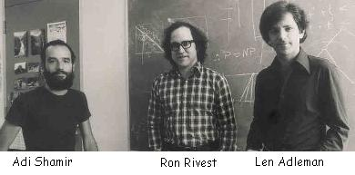

Le chiffre RSA
Description
 La méthode de cryptographie RSA a été inventée en 1977 par Ron Rivest, Adi Shamir et Len Adleman, à la suite de la découverte de la cryptographie à clé publique par Diffie et Hellman. Le RSA est encore le système cryptographique à clé publique le plus utilisé de nos jours. Il est intéressant de remarquer que son invention est fortuite : au départ, Rivest, Shamir et Adleman voulaient prouver que tout système à clé publique possède une faille.
Principe de fonctionnement : Si Bob souhaite recevoir des messages en utilisant le RSA, il procède de la façon suivante :- Création des clés : Bob crée 4 nombres p,q, e et d :
- p et q sont deux grands nombres premiers distincts. Leur génération se fait au hasard, en utilisant un algorithme de test de primalité probabiliste.
- e est un entier premier avec le produit (p-1)(q-1).
- d est tel que ed=1 modulo (p-1)(q-1). Autrement dit, ed-1 est un multiple de (p-1)(q-1). On peut fabriquer d à partir de e, p et q, en utilisant l'algorithme d'Euclide.
- Distribution des clés : Le couple (n,e) constitue la clé publique de Bob. Il la rend disponible par exemple en la mettant dans un annuaire. Le couple (n,d) constitue sa clé privée. Il la garde secrète.
- Envoi du message codé : Alice veut envoyer un message codé à Bob. Elle le représente sous la forme d'un ou plusieurs entiers M compris entre 0 et n-1. Alice possède la clé publique (n,e) de Bob. Elle calcule C=Me mod n. C'est ce dernier nombre qu'elle envoie à Bob.
- Réception du message codé : Bob reçoit C, et il calcule grâce à sa clé privée D=Cd (mod n). D'après un théorème du mathématicien Euler, D=Mde=M (mod n). Il a donc reconstitué le message initial.
Création d'une clé RSA :
Le RSA est-il sûr?
La sécurité du RSA repose sur le fait que, connaissant $n$, $e$, et $M^e\mod n$, il est très difficile de retrouver $M$
si l'on ne connait pas $d$. On dit que le problème de calcul du logarithme discret est difficile modulo $n$. En réalité,
la seule méthode que l'on connaisse (mais peut-être un service secret en a découvert une autre)
est de retrouver l'exposant secret $d$ en factorisant $n$ en le produit $p\times q$. C'est pour cela que l'on dit
que la sécurité de RSA repose sur la difficulté de factoriser de grands entiers en produits de deux facteurs premiers.
Ainsi, la majeure partie des attaques sur la partie théorique du RSA reposent sur des tentatives de factorisation d'entiers.
Pour le moment, cela reste un problème très difficile pour lequel on ne connait pas d'algorithmes efficaces. Le tableau suivant résume quelques records de factorisation d'entiers.
| Nb de chiffres de $n$ | Taille en bits | Date de factorisation |
| 232 | 768 | 2009 |
| 200 | 664 | 2005 |
| 174 | 576 | 2003 |
| 155 | 512 | 1999 |
Une autre histoire de la cryptographie à clé publique…
L'histoire a retenu les noms de Diffie, Hellman, Rivest, Shamir et Adleman comme inventeurs de la cryptographie à clé publique, vers 1976, 1977. En réalité, elle avait été découverte quelques années auparavant dans les bureaux du Government Communications Headquarters (GCHQ), le service de renseignements du gouvernement britannique. L'histoire commence vers la fin des années 1960, quand l'armée britannique, avec la miniaturisation des radios, et la réduction de leur coût,
comprend qu'elle va pouvoir équiper chaque soldat avec cet équipement. Il deviendra alors nécessaire de chiffrer un nombre considérable de communications,
et le principal problème reste la distribution des clés. James Ellis, un des cryptographes du GCHQ, est chargé de remédier à ce problème.
Il fait le même cheminement que Diffie et Hellman, et découvre le principe de la cryptographie à clé publique. Comme Diffie et Hellman,
il peine à trouver une fonction concrète pour mettre en oeuvre le protocole, et c'est un autre membre du GCHQ, Clifford Cocks,
qui réussit à faire le pas décisif en 1973. Et ce qu'il invente est exactement la cryptographie RSA!
L'histoire n'est pas tout à fait fini, car ces découvertes font débat au sein du GCHQ. Malcolm Williamson, notamment,
cherche une faille dans le protocole. Ses recherches le mènent, en 1975, à découvrir le protocole d'échange de clés de Diffie et Hellman, quelques mois
avant ceux-ci. Tenus au secret, Ellis, Cocks et Williamson ne purent jamais révélés leurs inventions, et le gouvernement britannique ne fit pas
breveter le système RSA, au contraire de la société américaine RSA Security fondée par Ronald Rivest, Adi Shamir et Leonard Adleman.
Les documents de l'époque étant encore protégés par le secret-défense, on ne sait pas exactement ce qui le GHCQ de cette découverte.
Et si elle était connue de la NSA dès le début des années 1980, elle ne fut rendue publique qu'en 1997, quand les enjeux n'étaient plus importants.
C'est au moins la troisième fois que des britanniques firent une grande découverte cryptographique qui ne fut pas rendue publique
immédiatement et qui fut redécouverte peu après par d'autres. La première fois, ce fut Charles Babbage qui avait découvert vers 1854 comment vaincre le chiffre
de Vigenère. Ceci fut redécouvert en 1863 par Kasiski, à qui on attribue souvent la paternité de la méthode de Babbage pour vaincre le chiffre de Vigenère.
La seconde fois se produisit lors de la Seconde Guerre Mondiale, lorsque les hommes et femmes de Bletchey Park parvenaient à vaincre le chiffre
des machines allemandes Enigma. Ce qu'ils avaient inventé alors, menés par Alan Türing, était le premier ordinateur programmable. Ses plans furent détruits,
et en 1946, des américains construisirent l'ENIAC, qui fut longtemps considéré comme le premier ordinateur de l'histoire.
Bien sûr, ceci n'enlève absolument rien au mérite de Diffie, Hellman, Rivest, Shamir et Adleman. Leurs découvertes furent
faites complètement indépendamment.
Consulter aussi